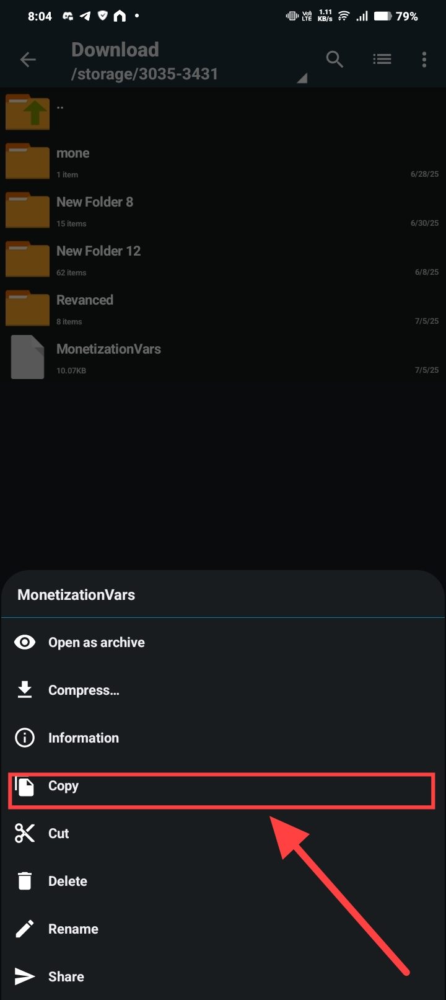
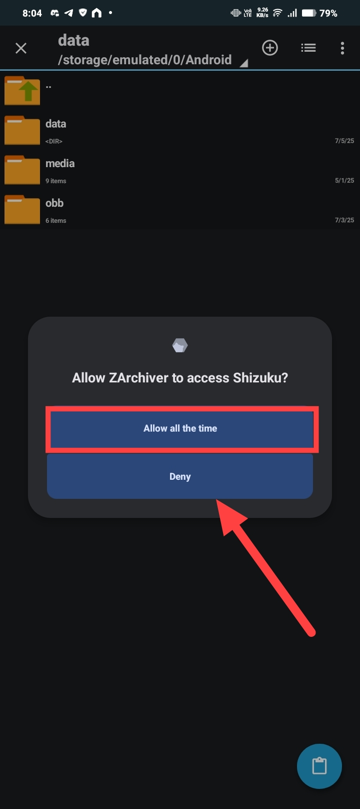
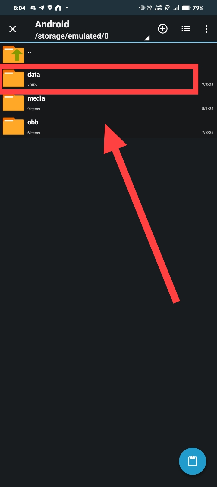
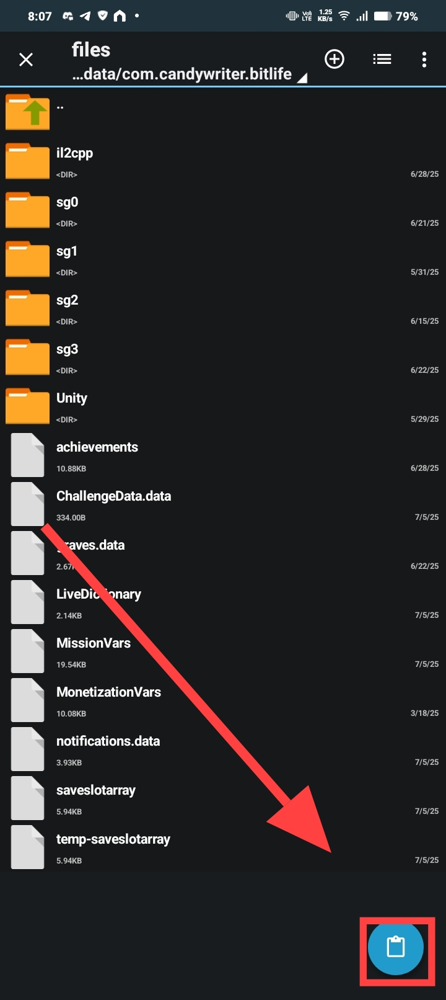
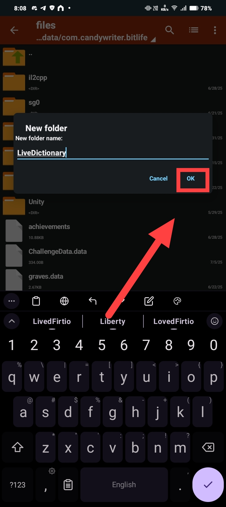

Welcome to BitGuides!
Works on Android 15+ and All Modern Versions
This method works perfectly on all modern Android versions, including the latest Android 15+. It uses Shizuku, which is currently the most stable and reliable method for accessing the protected Android/data folder without rooting your device.
Requirements
You need four things to get started. The main download link for the mod file is always updated here, but you can also find it in the community Reddit post.
- Shizuku: Download from Google Play
- ZArchiver: Download from Google Play
- BitLife: Download from Google Play
- MonetizationVars File: Download Latest Version
Setup & Installation
Step 1: Activate Shizuku
You must start Shizuku using the Wireless Debugging method. This is the most important step.
- Go to the official guide and follow the section "Start via Wireless Debugging": https://shizuku.rikka.app/guide/setup/
Step 2: Configure ZArchiver
Click here for the step-by-step ZArchiver setup
1. Open ZArchiver. 2. Click the three dots on the top right. >  3. Click **Settings**. >  4. Click **ROOT**. >  5. Click **Root Access** and select **Shizuku** from the dropdown menu. > **WARNING**: Shizuku must be running already for this to work. >  6. Enable the option **Use for Android/data and Android/obb**. > Step 3: Apply the Mod
- Navigate to your Download folder.
> The file must be named exactly
MonetizationVarswith no extra extension. - Long-press the
MonetizationVarsfile and click Copy. >  - Go to the ZArchiver home screen and navigate to
Android/data/. >
- A Shizuku pop-up will appear. Click Allow all the time. > 
- Open the com.candywriter.bitlife folder.
>

- Then open the files folder. > 
- Click the paste icon on the bottom right. > 
- When asked to "Overwrite File?", check the box and click REPLACE.
>

Step 4: Make the Mod Permanent
- In the same folder (
.../files/), find the file namedLiveDictionary. - Delete the
LiveDictionaryfile. >
- Create a new folder (not a file) and name it exactly
LiveDictionary. > 
Advanced Customization with BitEdit
For Power Users: Create a Custom Mod
If you want more control and wish to enable or disable specific things yourself on MonetizationVars, you can use my other project, BitEdit.
BitEdit is a web tool that lets you edit the MonetizationVars file using a simple, human-readable interface. You don't need to understand complex JSON code.
How it works:
1. Go to the BitEdit web tool: Click here to open BitEdit
2. Make your desired changes to MonetizationVars.
3. Download your new, MonetizationVars file from the tool.
4. Follow Step 3 and Step 4 of this guide using your newly created file.
Final Notes & Community
-
Community Support on r/BitLifeRebels > For questions and help, a great place to go is the
r/BitLifeRebelssubreddit. My bot, BitBot, automatically posts the newestMonetizationVarsfile there as soon as it's released. > Go to the Latest BitBot Post -
The mod is PERMANENT. You only need to do this once.
-
Shizuku is NOT permanent. > WARNING: You must restart Shizuku using Wireless Debugging every time you reboot your phone. You only need to do this if you plan on browsing
Android/data, not for the mod to work.
Once finished, force close BitLife and open it again. Everything will be unlocked.